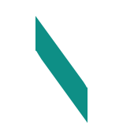
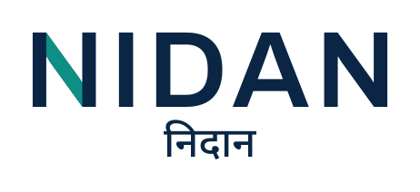
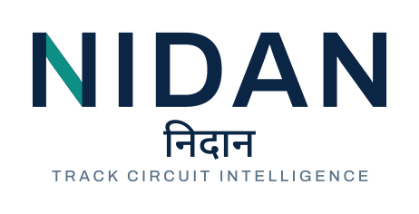
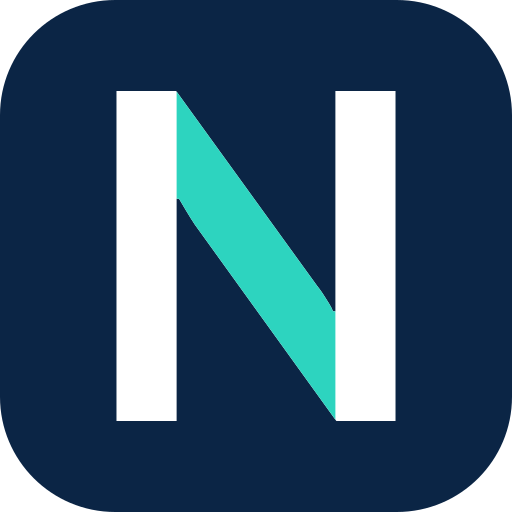

NIDAN · निदान · DIAGNOSIS
Two rails.
One signal.
A predictive failure propagation layer for Indian Railway track circuits. It reads the track, explains what it sees, and never touches the interlocking.

A predictive failure propagation layer for Indian Railway track circuits. It reads the track, explains what it sees, and never touches the interlocking.
Every track circuit is two rails and a current that runs between them. NIDAN adds nothing to the track; it listens to what the circuit already carries. The mark is built from exactly those three elements — and from the same geometry as the wordmark's first letter.
The letterform is not a badge placed beside the name. It is the first letter of NIDAN — drawn from the typeface's own N, then split into two rails and a signal.

The N is drawn to the wordmark's metrics, so it never looks pasted on. At 16 px the teal diagonal still reads; in one colour the silhouette still holds.
The primary lockup carries the bilingual name. The institutional lockup adds the descriptor. The vertical crest is for square and physical media. The horizontal mark is for interfaces where height is scarce.

Primary · light
Institutional · descriptor
Vertical crestनिदान (nidān) is the act of determining the cause of a condition. The Devanagari is not decoration and not a translation — it is the same name, and it is set as a first-class part of the lockup.
Navy carries the institution. Teal is the live signal and the only colour in the mark. Gold is caution, never decoration. Red is reserved for the Critical state in the product and never appears in the identity.
| Pair | Ratio | Use |
|---|---|---|
| Navy on Paper | 14.7 : 1 | Body, wordmark, headings |
| White on Navy | 15.4 : 1 | Dark lockups, signage |
| Paper on Ink | 18.0 : 1 | Control-room UI |
| Bright Teal on Navy | 8.3 : 1 | Signal on dark |
| Signal Teal on Paper | 3.8 : 1 | Graphics only, not body text |
| Deep Teal on Paper | 6.1 : 1 | Small teal text |
Archivo gives the name a sturdy, institutional voice. Inter keeps dense screens readable. Noto Sans Devanagari carries the Hindi without compromise. JetBrains Mono is reserved for telemetry and identifiers.
The identity has to survive a government file, a divisional notice board, a field tablet in sunlight and a pitch deck. These are the same assets, not adaptations.
The NIDAN pilot will run as a read-only advisory layer over the existing RDPMS telemetry for 42 track circuits in the Adra–Bishnupur section.
No write path to interlocking, signals, routes or track circuits is provisioned. Every alert carries a physics explanation, model drivers and a precedent set; the technician remains the decision-maker.
The identity is deliberately narrow. Restraint is what makes it credible to a reviewer, an OEM and an investor in the same room.

Every asset is vector, outlined and background-free unless stated. The wordmark is not live text; do not retype it.
| File | Use | Format |
|---|---|---|
| logo/nidan-logo-primary.svg | Primary bilingual lockup · light grounds | SVG · transparent |
| logo/nidan-logo-primary-dark.svg | Primary bilingual lockup · dark grounds | SVG · transparent |
| logo/nidan-logo-institutional.svg | Descriptor lockup · documents, title pages | SVG · transparent |
| logo/nidan-logo-vertical.svg | Crest · signage, badges, square media | SVG · transparent |
| logo/nidan-logo-horizontal.svg | Interface header · height-constrained | SVG · transparent |
| logo/nidan-mark.svg | Mark alone · watermarks, patterns, favicons | SVG · transparent |
| logo/nidan-logo-mono.svg | Single-colour print and engraving | SVG · transparent |
| logo/nidan-app-icon.svg | App icon and store listing | SVG · filled |
| logo/nidan-favicon.svg | Browser favicon · simplified | SVG · filled |
| brand-sheet.html | This document · self-contained, offline | HTML + local fonts |